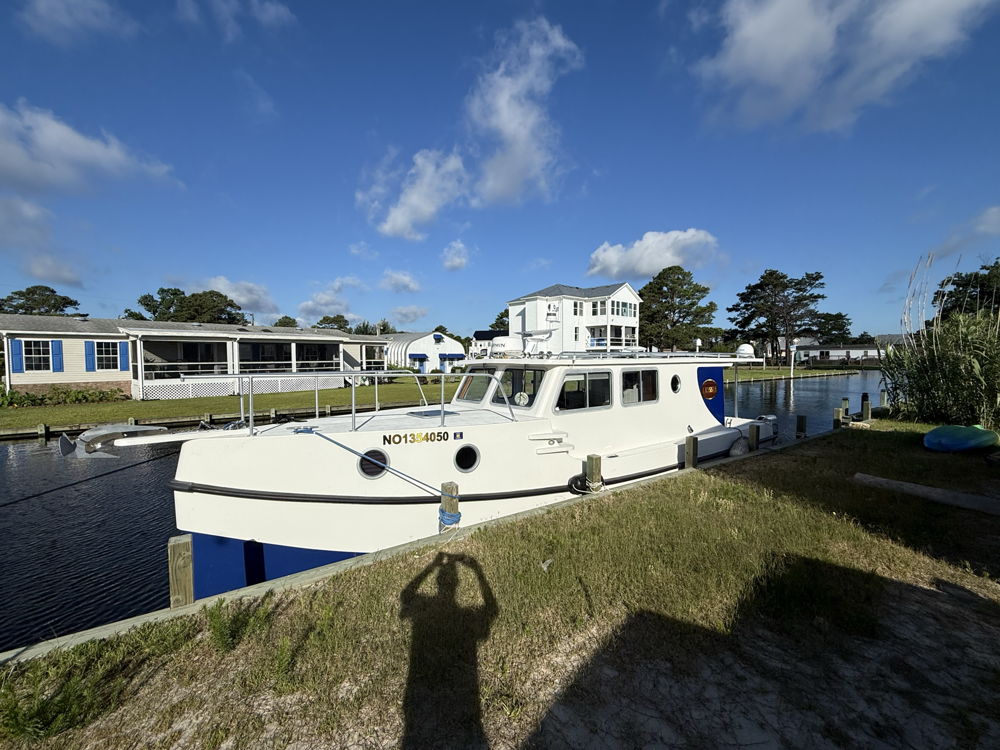

Great Harbour TT35
Aboard Ulysses
Ulysses is a shallow-draft cruising motor trawler suited to protected waters, quiet passages, and comfortable private charters across the Currituck Sound.
Boat benefits
Practical capability matters more than flash.
The Great Harbour TT35 is known for shallow-water access, a protected cabin, easy boarding at varied dock heights, efficient outboard power, and comfortable small-group travel. Dauntless translates those traits into a calm sightseeing experience rather than a luxury-yacht promise.
35 ft 8 inLength overall
10 ft 4 inBeam
18 inApproximate draft
Twin 60 hpStandard outboard power
8-16 mphTypical cruising range
Up to 6Private charter guests

Comfort and safety
A protected, steady platform for seeing the sound.
- Shallow-draft access for soundside water, subject to conditions.
- Protected cabin and small-group seating for a personal feel.
- Twin outboard redundancy and weather-aware routing.
- Easy boarding is subject to dock height, water level, and guest mobility.
